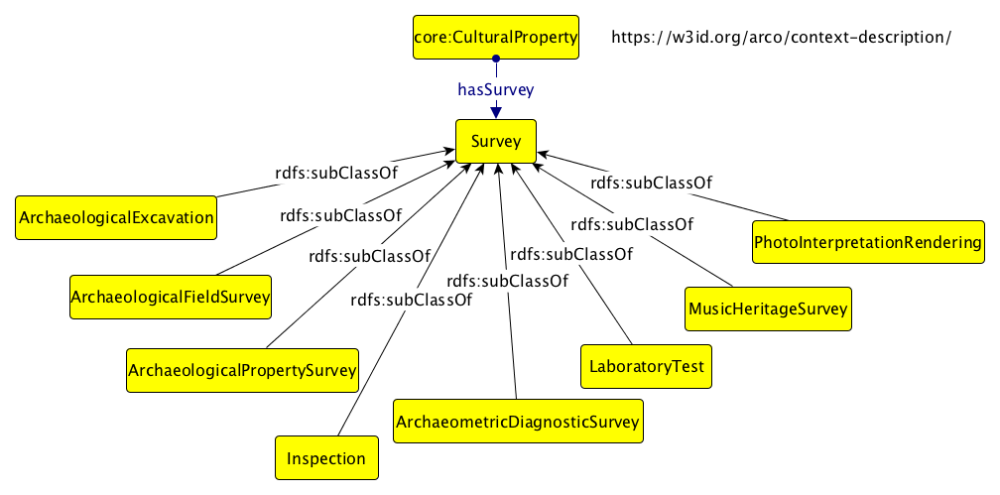
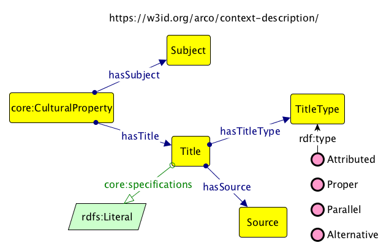
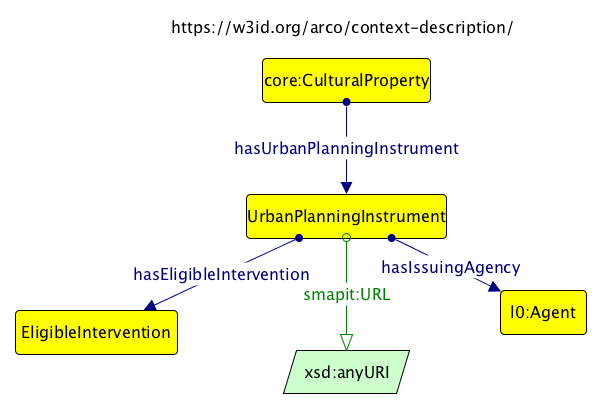
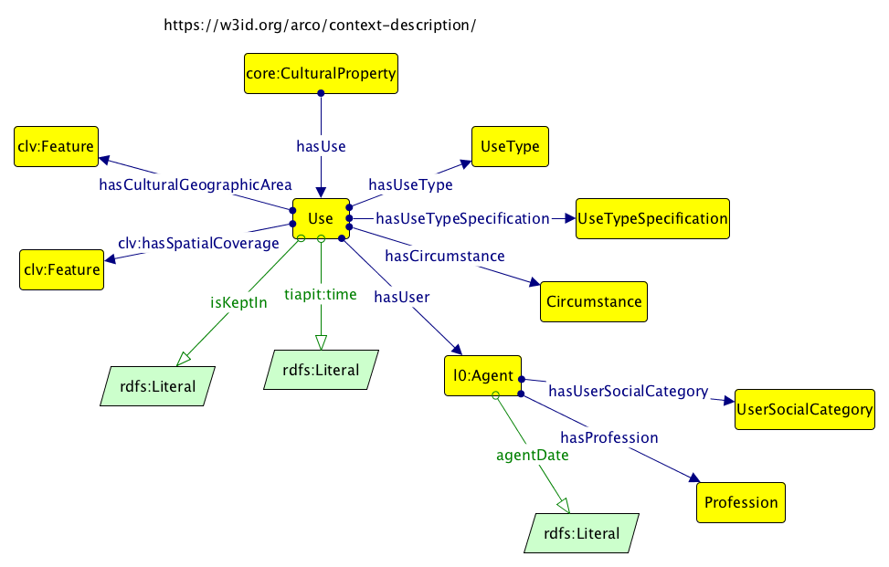
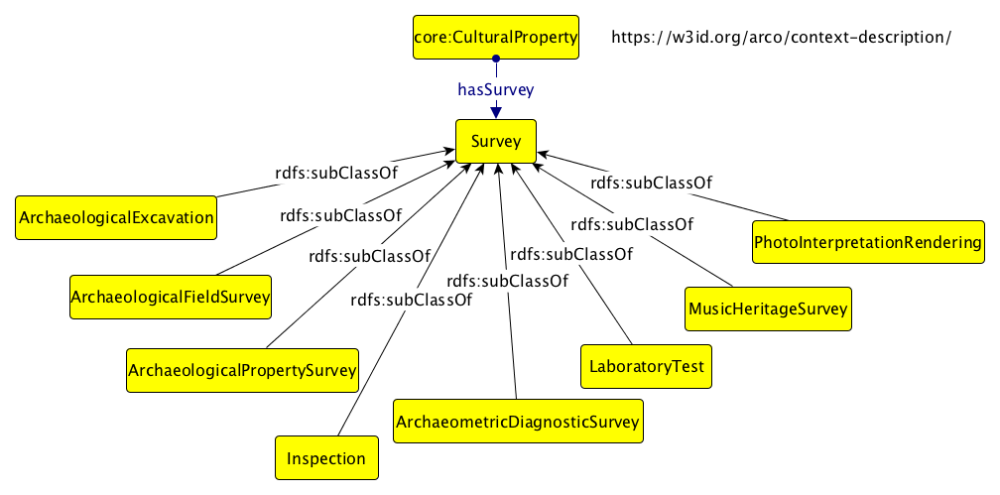
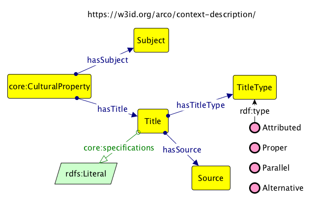
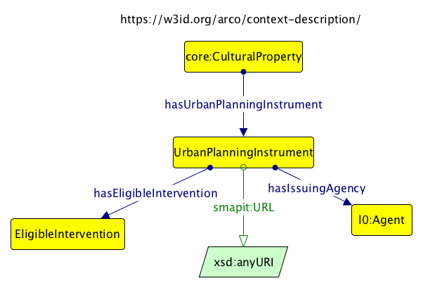
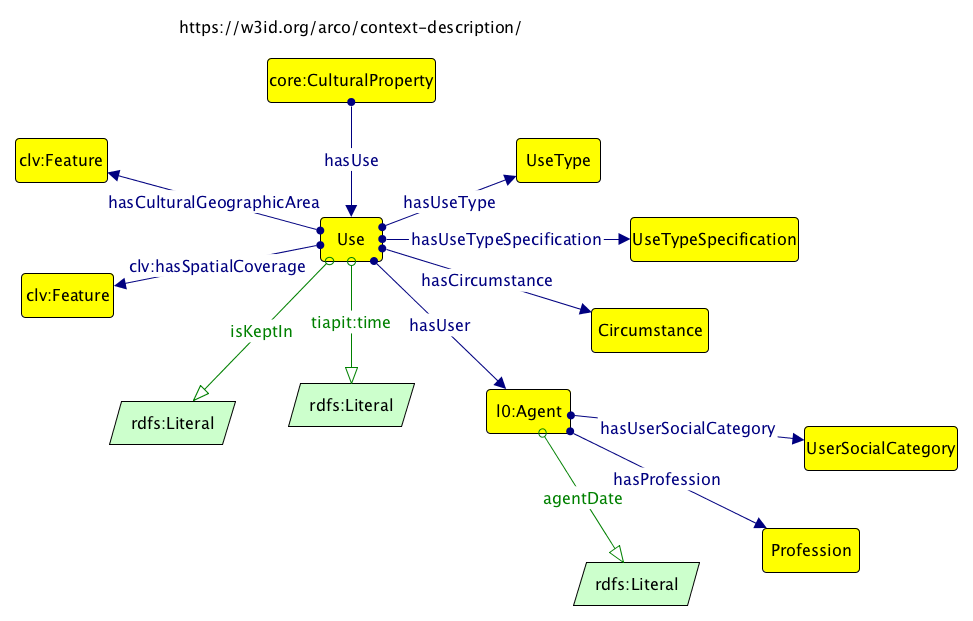

I moduli di ArCo v0.3
In questa sezione si illustrano sinteticamente i nuovi nuclei concettuali principali introdotti nella terza versione della rete ArCo. Per una loro descrizione dettagliata si rimanda alla sezione "Ontologie" della pagina principale.
Sia le scelte di modellazione sia il vocabolario sono da ritenersi provvisori.
Modulo Core (arco-core:)
Questo modulo modella le informazioni considerate "core" del dominio dei beni culturali. Il primo diagramma illustra la modellazione della relazione tra un agente e il ruolo che riveste; il secondo diagramma illustra le relazioni tra il bene culturale e le sue parti (componenti, residuali, generiche parti cui si riferisce una porzione specifica di informazione registrata nella scheda catalografica.
Modulo Denotative Description (arco-dd:)
Questo modulo (denotazione è inteso come l'atto di indicare una cosa attraverso segni esteriori) modella le informazioni che riguardano il bene culturale in sé, con i suoi attributi. I diagrammi seguenti illustrano la rappresentazione dell'insieme delle misure di un bene culturale, con unità di misura, valore, validità e la rappresentazione dei dettagli tecnici di un bene culturale (materia, tecnica, forma, colore, etc.).
Modulo Context Description (arco-cd:)
Questo modulo modella le informazioni che riguardano il contesto - inteso in senso ampio - in cui il bene culturale viene a trovarsi nel corso della sua storia: ciascun contesto che lo interessa o lo ha interessato viene descritto nelle componenti "spazio", "tempo", "evento", "entità coinvolte" (enti, persone, altri beni). Nei diagrammi si illustrano le rappresentazioni di: acquisizione; mutamento della condizione materiale; appartenenza a una collezione; documentazione e bibliografia; stima; certificati per la circolazione; esportazione e importazione; fruizione di un vestimento; interventi sul bene; inventari; condizione giuridica; provvedimenti di tutela; agenti correlati; rapporto del bene culturale con altre entità, compresi altri beni culturali; responsabilità nei confronti di un bene fotografico; indagini; titoli; strumenti urbanistico-territoriali; usi del bene.
 







Modulo Location (arco-location:)
Questo modulo modella le informazioni relative alla localizzazione del bene culturale. Nel diagramma si illustra la rappresentazione delle informazioni di georeferenziazione.
Modulo Catalogue (arco-catalogue:)
Questo modulo modella le informazioni relative al Catalogo dei Beni Culturali, e quindi alle schede di catalogo. Nel diagramma si illustra la rappresentazione di altri codici scheda assegnati da enti diversi da ICCD, del recupero di informazioni pregresse e di codici ICCD soppressi.